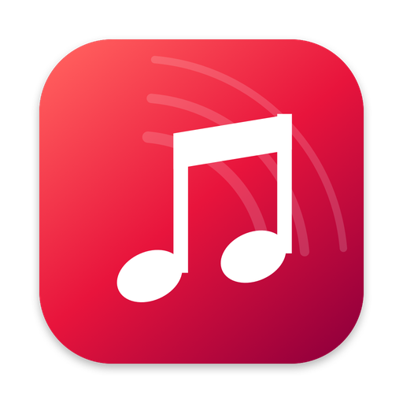

How to get YouTube Music on Mac: 5 ways compared
Updated 8 November 2026 · 6 min read
Short answer: Google doesn't make a YouTube Music app for macOS – it only runs at music.youtube.com in your browser. To get an app anyway, you can save it to the Dock with Safari (built in, macOS 14+), install it from Chrome, or use a free app: Tubemac (1 MB, made for Mac), YTMDesktop or Pear Desktop (cross-platform, ~118 MB) or Kaset (own interface, needs Premium).
Quick comparison
| Option | What it is | Mac download | Without Premium | Best for |
|---|---|---|---|---|
| Safari web app | Safari's “Add to Dock” | Built in | Yes | Zero install, passkey sign-in |
| Chrome app | Chrome's “Install” option | Needs Chrome | Yes | People who live in Chrome |
| Tubemac | Mac app with Apple's web engine | 1 MB | Yes | The most Mac-like experience |
| YTMDesktop | Electron app (bundled Chrome) | 118 MB | Yes | Discord status, phone remote, Windows/Linux too |
| Pear Desktop | Electron app (bundled Chrome) | 118 MB | Yes | Tinkerers who want plugins |
| Kaset | Native app with its own interface | 18 MB | Premium for full playback | Premium users on macOS 15.4+ |
Sizes and versions from each project's latest Mac release on GitHub, checked 8 November 2026.
1. Safari web app (built into macOS)
Since macOS 14 Sonoma, Safari can turn any website into a Dock app. It's the quickest option and the only one where passkeys and saved passwords work at sign-in.
- Open music.youtube.com in Safari and sign in.
- Choose File → Add to Dock and click Add.
Good to know: it's still Safari under the hood – there's no Mac-specific polish such as a reworked toolbar, and the window layout is that of the website.
2. Chrome (or Edge) installed app
If you use Chrome, you can install YouTube Music as an app that opens in its own window.
- Open music.youtube.com in Chrome.
- Click the install icon at the right end of the address bar, or open the ⋮ menu and choose the install option for YouTube Music.
Good to know: Chrome has to stay installed, and the app follows Chrome's look rather than macOS'.
3. Tubemac – the most Mac-like option
Tubemac is a free, open-source Mac app (1 MB) that shows the official YouTube Music in a native window. It's built on Apple's own web engine – the one Safari uses – and focuses on making YouTube Music feel like a Mac app:
- Artwork runs edge to edge under the window buttons; the search sits centered in the toolbar.
- Media keys, AirPods and one clean Control Center card with artwork, back, play/pause and next.
- Keeps playing when you close the window; universal for Apple Silicon and Intel, macOS 14+.
Good to know: Mac only, and passkeys don't work at sign-in (use your password once). macOS asks you to confirm the first launch because the app isn't notarized.
4. YTMDesktop and Pear Desktop – cross-platform apps
YTMDesktop and Pear Desktop (formerly “YouTube Music Desktop App” by th-ch) are popular open-source apps for Windows, Mac and Linux. Both are built with Electron, meaning each ships its own copy of Chrome – which is why the Mac download is around 118 MB.
- YTMDesktop adds Discord Rich Presence, a remote-control app for your phone and custom shortcuts.
- Pear Desktop has a large plugin system for people who like to customize.
Good to know: great if you also use Windows or Linux; on a Mac they look and behave more like a Chrome window than a Mac app.
5. Kaset – a native app with its own interface
Kaset rebuilds the YouTube Music interface natively in SwiftUI with an Apple-Music-style layout, and also plays regular YouTube videos. It requires macOS 15.4 or later, and full playback needs a YouTube Music Premium subscription.
Good to know: because it doesn't use the official website, new YouTube Music features only appear once the app is updated.
Which one should you choose?
You want it to feel like a real Mac app: Tubemac.
You don't want to install anything: Safari's Add to Dock.
You also use Windows or Linux, or want Discord status: YTMDesktop or Pear Desktop.
You have Premium and a recent macOS, and want a fully native interface: Kaset.
FAQ
Does YouTube Music have a Mac app?
No. Google offers YouTube Music on macOS only at music.youtube.com. You can turn it into an app with Safari or Chrome, or use a free third-party app such as Tubemac, YTMDesktop, Pear Desktop or Kaset.
What is the lightest YouTube Music app for Mac?
Tubemac, at about 1 MB, because it uses Apple's built-in web engine. Electron apps like YTMDesktop and Pear Desktop are around 118 MB because they ship their own Chrome.
Can I use YouTube Music on Mac without Premium?
Yes. The website, the Safari and Chrome web apps, Tubemac, YTMDesktop and Pear Desktop all work with free accounts (with ads). Kaset needs Premium for full playback.

Want YouTube Music to feel like a real Mac app?
Tubemac is a free, 1 MB YouTube Music app for Mac – edge-to-edge design, media keys, Control Center and background playback. Apple Silicon & Intel, macOS 14+.